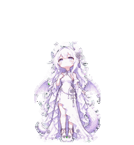

<!doctype html>
<html lang="zh-CN"><meta charset="utf-8"><meta name="viewport" content="width=device-width,initial-scale=1"><title>霜序 · 本地动画预览</title>
<style>
*{box-sizing:border-box}body{margin:0;background:#f5f2fa;color:#332c43;font:16px/1.7 system-ui,"Microsoft YaHei",sans-serif}main{max-width:1000px;margin:40px auto;padding:0 24px}h1{margin-bottom:4px}p{color:#675d77}.panel{background:white;border-radius:20px;padding:24px;margin:20px 0;border:1px solid #e4dced}.stage{display:flex;justify-content:center;align-items:center;min-height:300px;background-color:#f6f3fa;background-image:linear-gradient(45deg,#eae5f1 25%,transparent 25%),linear-gradient(-45deg,#eae5f1 25%,transparent 25%),linear-gradient(45deg,transparent 75%,#eae5f1 75%),linear-gradient(-45deg,transparent 75%,#eae5f1 75%);background-size:24px 24px;background-position:0 0,0 12px,12px -12px,-12px 0;border-radius:12px}#pet{width:192px;height:208px;background-image:url('outputs/shuangxu-spritesheet.png');background-repeat:no-repeat;transform:scale(1.3)}button,select{font:inherit;padding:8px 12px;border:1px solid #d6cae5;border-radius:9px;background:#fff;color:#443557;cursor:pointer}button.active{background:#76549b;color:#fff}.controls{display:flex;flex-wrap:wrap;gap:8px;margin-top:18px}a{color:#76549b}video{width:100%;max-height:340px;border-radius:12px}.grid{display:grid;grid-template-columns:repeat(auto-fit,minmax(210px,1fr));gap:12px}.grid img{max-width:100%;height:auto}label{margin-right:16px}#info{font-variant-numeric:tabular-nums}small{color:#796e88}
</style><main>
<h1>霜序 · 本地动画预览</h1><p>九类动作 · 十六个视线方向。文件直接从本地读取，无需安装或联网。</p>
<section class="panel"><div class="stage" id="stage"><div id="pet" role="img" aria-label="霜序动画"></div></div><div class="controls" id="states"></div><div class="controls"><button id="play">暂停</button><label>大小 <select id="scale"><option value="1">原始</option><option value="1.3" selected>1.3 倍</option><option value="1.6">1.6 倍</option></select></label><label>方向 <select id="direction"></select></label><button id="look">视线循环</button></div><p id="info" aria-live="polite"></p><small>这些按钮只控制本地预览。应用内宠物的创建、选用状态见使用说明。</small></section>
<section class="panel"><h2>完整动作视频</h2><video controls loop preload="metadata" src="outputs/shuangxu-all-states.mp4"></video><p><a href="outputs/shuangxu-all-states.gif">打开完整动作 GIF</a> · <a href="outputs/shuangxu-spritesheet.png">打开最终透明精灵表</a> · <a href="README-使用说明.md">使用说明</a></p></section>
<section class="panel grid"><div><h3>跳跃衔接</h3></div><div><h3>视线方向</h3></div></section>
</main><script>
const rows=[['待机','idle',[280,110,110,140,140,320]],['向右移动','running-right',[120,120,120,120,120,120,120,220]],['向左移动','running-left',[120,120,120,120,120,120,120,220]],['招手','waving',[140,140,140,280]],['跳跃','jumping',[140,140,140,140,280]],['受挫','failed',[140,140,140,140,140,140,140,240]],['等待输入','waiting',[150,150,150,150,150,260]],['正在工作','running',[120,120,120,120,120,220]],['查看结果','review',[150,150,150,150,150,280]]];
const pet=document.querySelector('#pet'),info=document.querySelector('#info'),play=document.querySelector('#play'),direction=document.querySelector('#direction');
let row=0,frame=0,timer=null,playing=true,mode='state',angle=0;
function draw(){const r=mode==='state'?row:9+Math.floor(angle/8),c=mode==='state'?frame:angle%8;pet.style.backgroundPosition=`${-c*192}px ${-r*208}px`;info.textContent=mode==='state'?`${rows[row][0]} · ${rows[row][1]} · 第 ${frame+1}/${rows[row][2].length} 帧`:`视线 ${angle*22.5}°（0° 上，90° 右，180° 下，270° 左）`;direction.value=angle;document.querySelectorAll('#states button').forEach((b,i)=>b.classList.toggle('active',mode==='state'&&i===row));}
function schedule(){clearTimeout(timer);draw();if(!playing)return;timer=setTimeout(()=>{if(mode==='state')frame=(frame+1)%rows[row][2].length;else angle=(angle+1)%16;schedule();},mode==='state'?rows[row][2][frame]:250);}
rows.forEach((r,i)=>{const b=document.createElement('button');b.textContent=r[0];b.onclick=()=>{row=i;frame=0;mode='state';schedule();};document.querySelector('#states').append(b);});
for(let i=0;i<16;i++){const o=document.createElement('option');o.value=i;o.textContent=`${i*22.5}°`;direction.append(o);}
play.onclick=()=>{playing=!playing;play.textContent=playing?'暂停':'播放';schedule();};
direction.onchange=()=>{mode='look';angle=Number(direction.value);playing=false;play.textContent='播放';schedule();};
document.querySelector('#look').onclick=()=>{mode='look';angle=0;playing=true;play.textContent='暂停';schedule();};
document.querySelector('#scale').onchange=e=>pet.style.transform=`scale(${Number(e.target.value)})`;
schedule();
</script></html>
